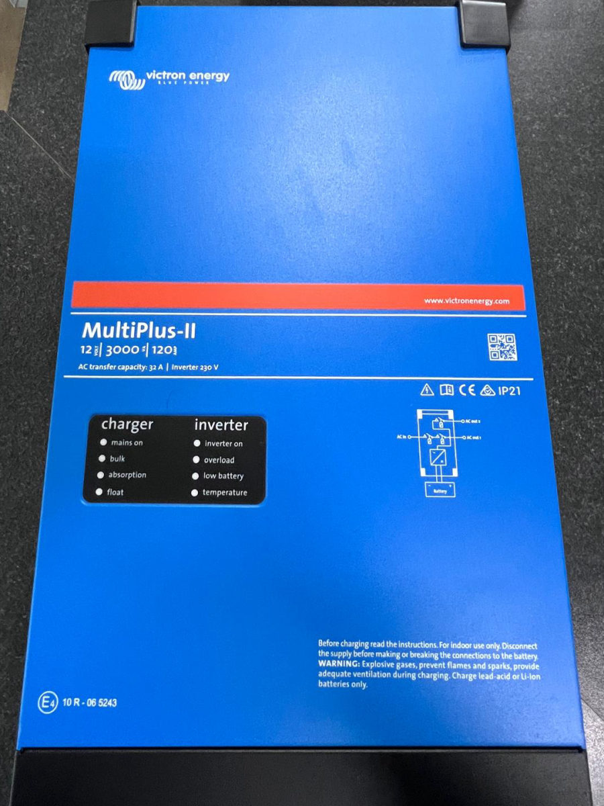

Che cosa fa, quanta potenza dà davvero, cosa serve per usarlo bene e quando conviene rispetto a inverter e caricabatterie separati.
Victron MultiPlus-II 12/3000: inverter e caricabatterie in uno.
Prezzi letti dal nostro catalogo. Spedizione gratuita. Montaggio nella nostra officina di Tivoli per i prodotti acquistati da noi.
Scegli il modello
Reso entro 14 giorni. Il confronto completo di tutti i modelli è qui sotto.
In breve: il Victron MultiPlus-II 12/3000/120-32 è un inverter, un caricabatterie e un commutatore rete/batteria in un solo apparecchio. Dà 3000 VA (2400 W continui a 25 °C, picco 5500 W), carica le batterie fino a 120 A e ha un commutatore di trasferimento da 32 A. Costa 1375,00 €.
In più, la funzione PowerAssist aiuta la rete: se la colonnina o il generatore non bastano per i consumi del momento, l'apparecchio aggiunge la corrente della batteria.
| Dato | Valore |
|---|---|
| Tensione della batteria | 12 V (ingresso da 9,5 a 17 V) |
| Potenza continua | 3000 VA; 2400 W a 25 °C, 2200 W a 40 °C, 1700 W a 65 °C |
| Potenza di picco | 5500 W |
| Uscita | 230 V ±2%, 50 Hz |
| Corrente di carica massima | 120 A |
| Commutatore di trasferimento | 32 A |
| Efficienza massima | 93% |
| Consumo a vuoto | 13 W |
| Batterie | Al piombo o al litio (come indicato sull'etichetta) |
| Uso | Solo all'interno; grado di protezione IP21 secondo l'etichetta dell'apparecchio |
| Dimensioni e peso | 546 x 275 x 147 mm, 19 kg (scheda tecnica Victron) |
I dati sono quelli della scheda tecnica del costruttore e dell'etichetta dell'apparecchio. La potenza continua scende con il caldo: tienine conto se lo monti in un vano che si scalda.
Il limite è la potenza continua: somma i watt degli apparecchi che usi insieme (li trovi sull'etichetta di ciascuno) e tieni un po' di margine rispetto ai 2400 W. Piano a induzione, macchina del caffè o microonde possono stare dentro questo limite, ma non tutti insieme e non a ogni potenza: controlla i dati del tuo apparecchio. I carichi con un picco di avviamento alto, come un compressore, usano la riserva di potenza fino a 5500 W.
Per avere inverter e caricabatterie si può scegliere anche la soluzione a due apparecchi. I numeri a catalogo:
| Soluzione | Cosa offre | Prezzo | Spedizione |
|---|---|---|---|
| Victron MultiPlus-II 12/3000/120-32 inverter e caricabatterie | Un solo apparecchio: inverter 3000 VA, caricabatterie fino a 120 A e commutatore rete/batteria da 32 A | 1375,00 € | Spedizione gratuita |
| Inverter onda sinusoidale pura 3000 W 12 V con by-pass + Caricabatterie Mestic MBC-1040 230 V / 12 V 40 A | Due apparecchi: inverter a onda pura da 3000 W con by-pass sulla rete esterna e caricabatterie da 40 A | 1265,98 € (somma dei due) | Spedizione calcolata nel carrello |
Dicci che camper hai e come lo usi: ti consigliamo il modello giusto prima di ordinare. Chiamaci al 348 990 5455 o scrivici dal sito.
Chiedi un consiglio